Todos
Controles remotos
Filtros de aire
Repuestos para maquinaria
Controles F21
Controles F23 / F24
Controles IP65/IP66 y kits
Joystick y a medida
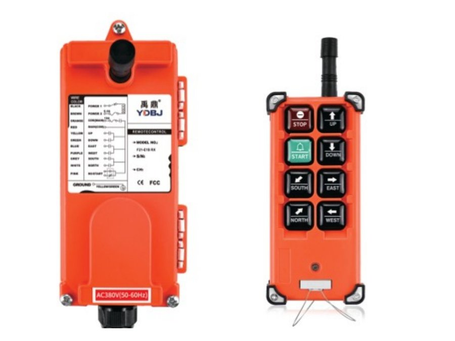
Serie F21
Control inalámbrico de 6 botones
Modelo F21-E1B
Botonera compacta para polipastos y puentes grúa: subir, bajar, este, oeste, norte, sur y arranque/parada.
Mando 210 × 70 mm · receptor 210 × 80 mm
Alcance hasta 100 m
Alimentación 12 V–220 V AC/DC y 24 V–440 V AC/DC
Certificado CE y FCC
Cotizar por WhatsApp
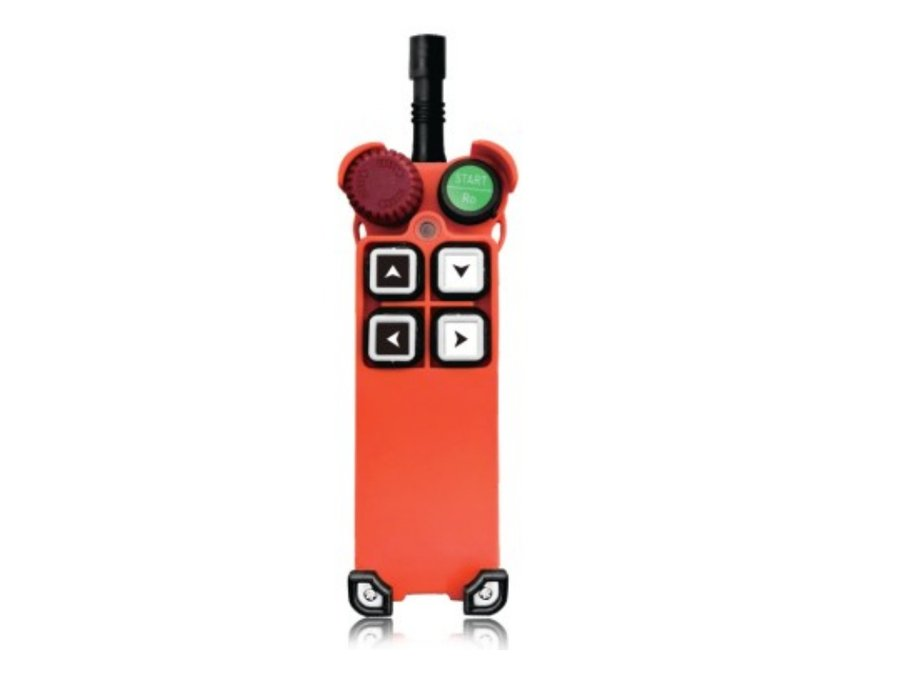
Serie F21
Control inalámbrico de 4 botones
Modelo F21-4S
Mando liviano con parada de emergencia tipo hongo y llave de arranque. Ideal para polipastos de dos movimientos.
Mando 205 × 57 mm
Alcance hasta 100 m
Alimentación 12 V–220 V AC/DC y 24 V–440 V AC/DC
Frecuencia 315 / 433 / 868 MHz
Cotizar por WhatsApp
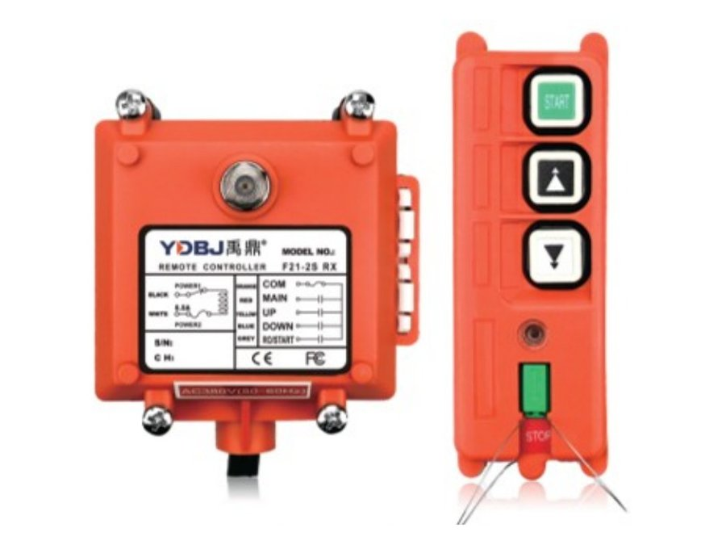
Serie F21
Control inalámbrico de 2 botones
Modelo F21-2S
La solución más simple para subir y bajar: polipastos eléctricos, montacargas y portones.
Mando 130 × 45 mm
Receptor compacto 90 × 90 mm
Alcance hasta 100 m
Material ABS de alta resistencia
Alimentación 12 V–220 V AC/DC y 24 V–440 V AC/DC
Cotizar por WhatsApp
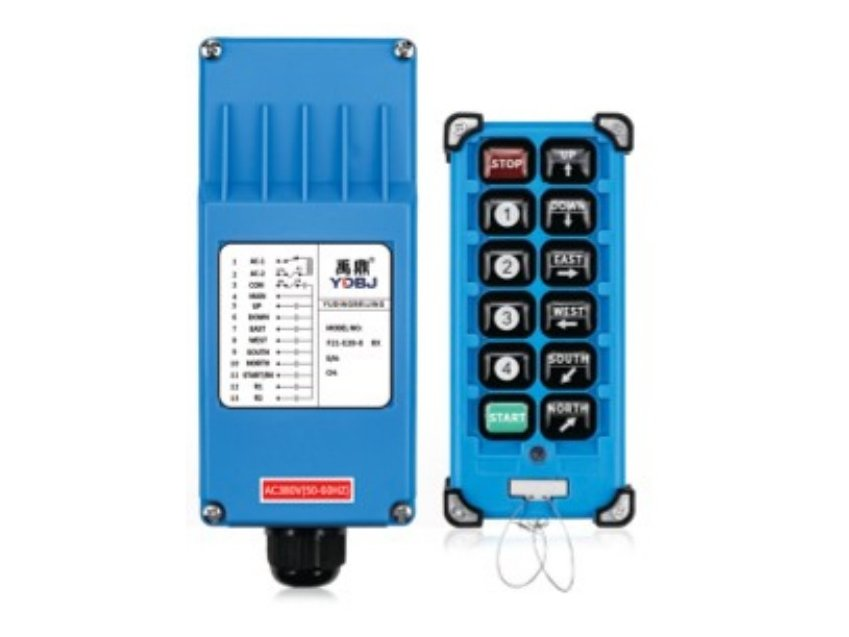
Serie F21
Control inalámbrico de 8 botones
Modelo F21-E2B-8
Ocho funciones de una velocidad con botones de arranque y parada, para grúas y equipos de elevación.
Mando 160 × 70 mm · receptor 212 × 80 mm
Alcance hasta 100 m
Frecuencia 868 MHz
Certificado CE y FCC
Alimentación 12 V–220 V AC/DC y 24 V–440 V AC/DC
Cotizar por WhatsApp
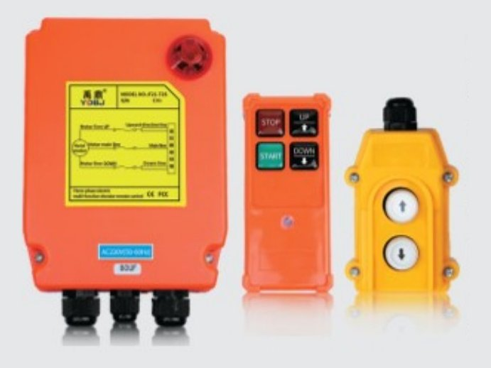
Serie F21
Control para motor con botonera de cable
Modelo F21-T2S
Incluye mando inalámbrico y botonera con cable. El receptor se conecta directo al motor (U, V, W).
Mando 130 × 55 mm · botonera con cable 127 × 73 mm
Alcance 150 / 250 m
Alimentación 12 V–220 V AC/DC y 24 V–440 V AC/DC
Resistente al agua, al polvo y a caídas
Cotizar por WhatsApp
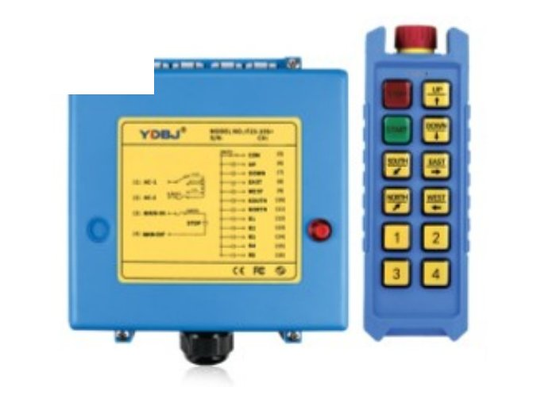
Serie F23
Control inalámbrico de 10 botones
Modelo F23-10S+
Carcasa de nylon con 30 % de fibra de vidrio, pensada para trabajo pesado a la intemperie.
Mando 175 × 60 mm · receptor 190 × 160 mm
Alcance 150 / 250 m
Protección IP65
Alimentación 12 V–220 V AC/DC y 24 V–440 V AC/DC
Cotizar por WhatsApp
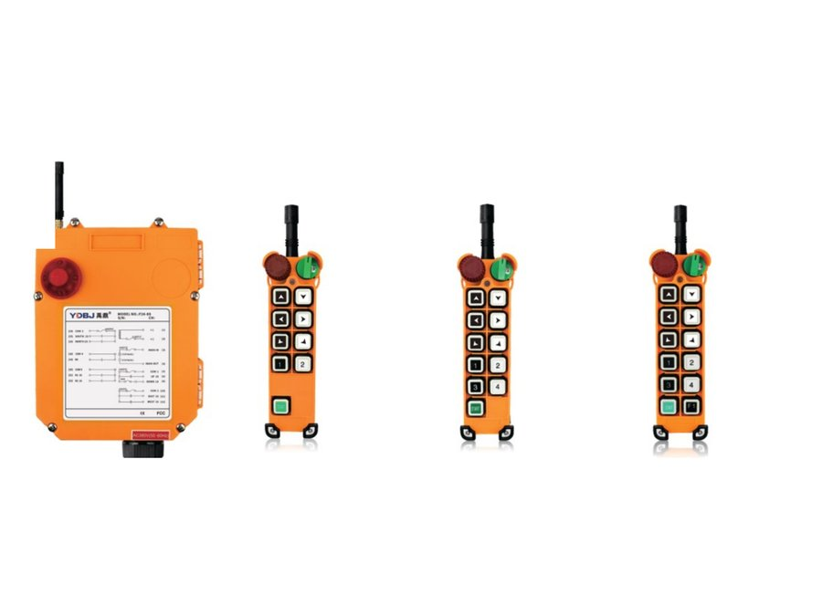
Serie F24
Controles de 8, 10 y 12 botones
Modelo F24-8S / 10S / 12S
Botoneras largas para puentes grúa y grúas pórtico, con parada de emergencia y llave de arranque.
Mando 235 × 47 mm · receptor 323 × 155 mm
Alcance hasta 100 m
Una velocidad
Alimentación 12 V–220 V AC/DC y 24 V–440 V AC/DC
Cotizar por WhatsApp
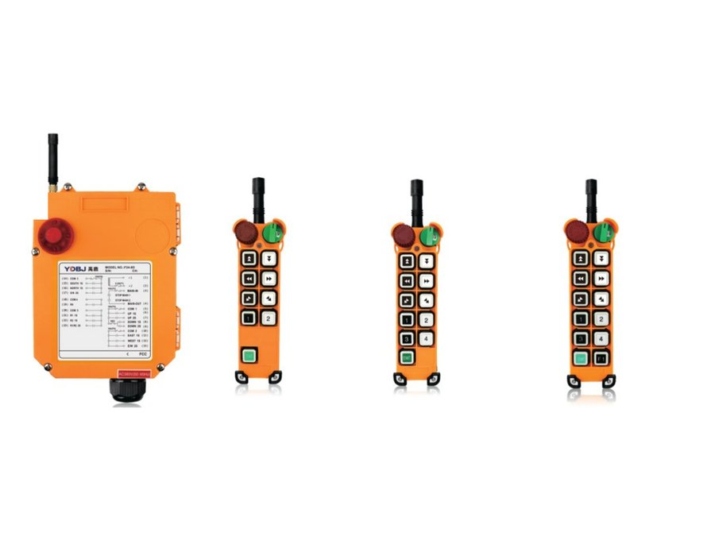
Serie F24
Controles de dos velocidades
Modelo F24-8D / 10D / 12D
Mismo formato que la serie F24, con botones de doble paso para movimientos lentos y rápidos.
Mando 235 × 47 mm · receptor 323 × 155 mm
Dos velocidades
Alcance hasta 100 m
Frecuencia 433 MHz
Alimentación 12 V–220 V AC/DC y 24 V–440 V AC/DC
Cotizar por WhatsApp
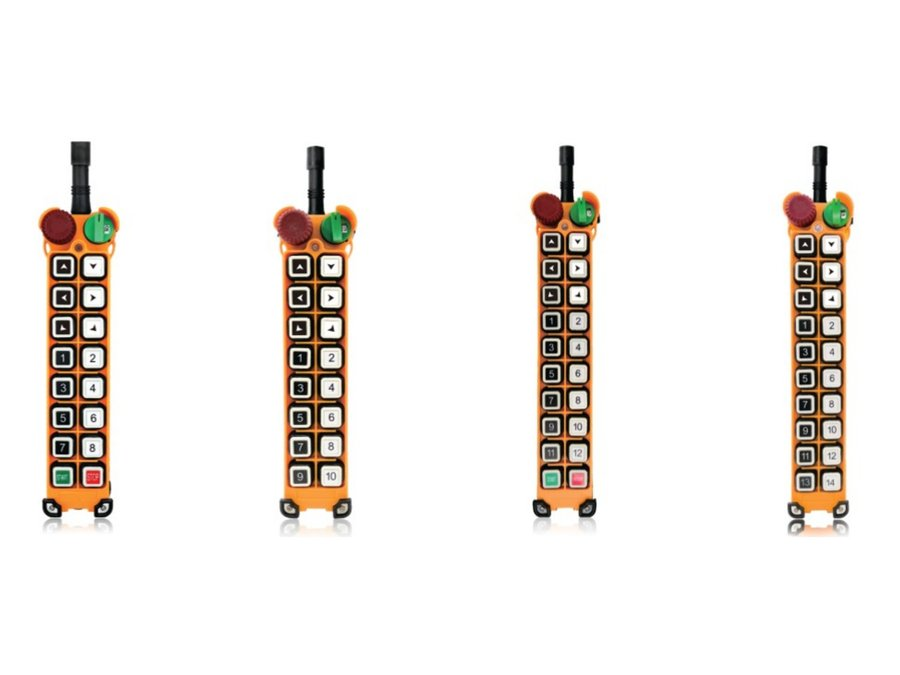
Serie F24
Controles de 14 a 20 botones
Modelo F24-14S a F24-20S
Para grúas con muchas funciones: varios ganchos, imanes, luces o accesorios en un solo mando.
14, 16, 18 o 20 botones
Mando de 280 a 325 mm de largo
Parada de emergencia tipo hongo
Llave de arranque
Alimentación 12 V–220 V AC/DC y 24 V–440 V AC/DC
Cotizar por WhatsApp
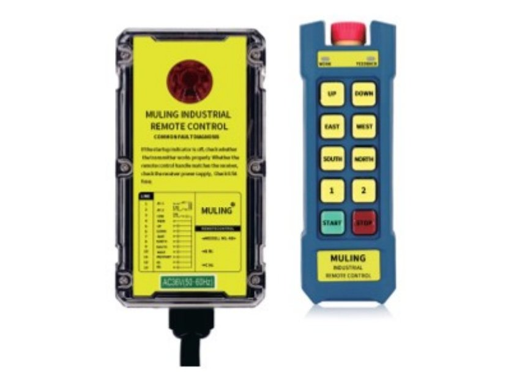
Serie ML
Control de 8 botones IP66
Modelo ML-K8+
Parada de emergencia tipo hongo y opción de batería de litio incorporada. Funciona en frío o calor extremos.
Mando 195 × 65 mm · receptor 210 × 97 mm
Alcance 150 / 250 m
Protección IP66 · de -40 °C a 85 °C
Pila AA o batería de litio
Alimentación 12 V–220 V AC/DC y 24 V–440 V AC/DC
Cotizar por WhatsApp
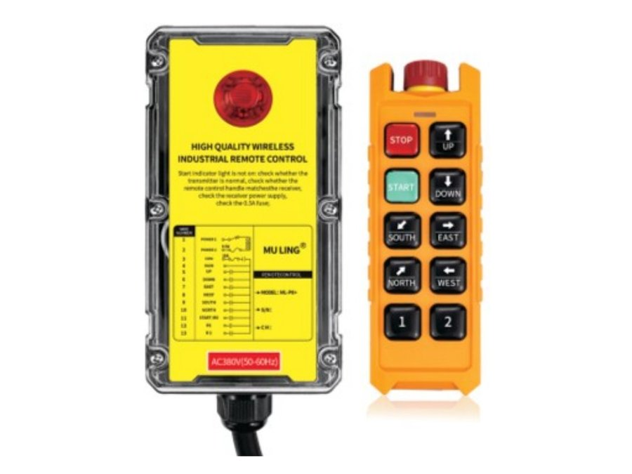
Serie ML
Control de 8 botones IP65
Modelo ML-P8+
Mando ergonómico y receptor con tapa transparente para ver el estado y diagnosticar fallas rápido.
Mando 145 × 60 mm · receptor 215 × 97 mm
Alcance 150 / 250 m
Protección IP65 · de -40 °C a 85 °C
Nylon con 30 % de fibra de vidrio
Alimentación 12 V–220 V AC/DC y 24 V–440 V AC/DC
Cotizar por WhatsApp
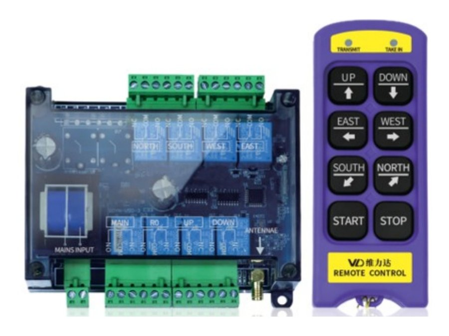
Kit con placa de relés
Kit de 6 botones con placa de relés
Modelo LD-BC6
Receptor compacto tipo placa, fácil de integrar en tableros, portones y maquinaria liviana.
Mando 135 × 53 mm · receptor 125 × 110 mm
Alcance 150 / 250 m
Alimentación 12 V–220 V AC/DC y 24 V–440 V AC/DC
De -35 °C a 75 °C
Cotizar por WhatsApp
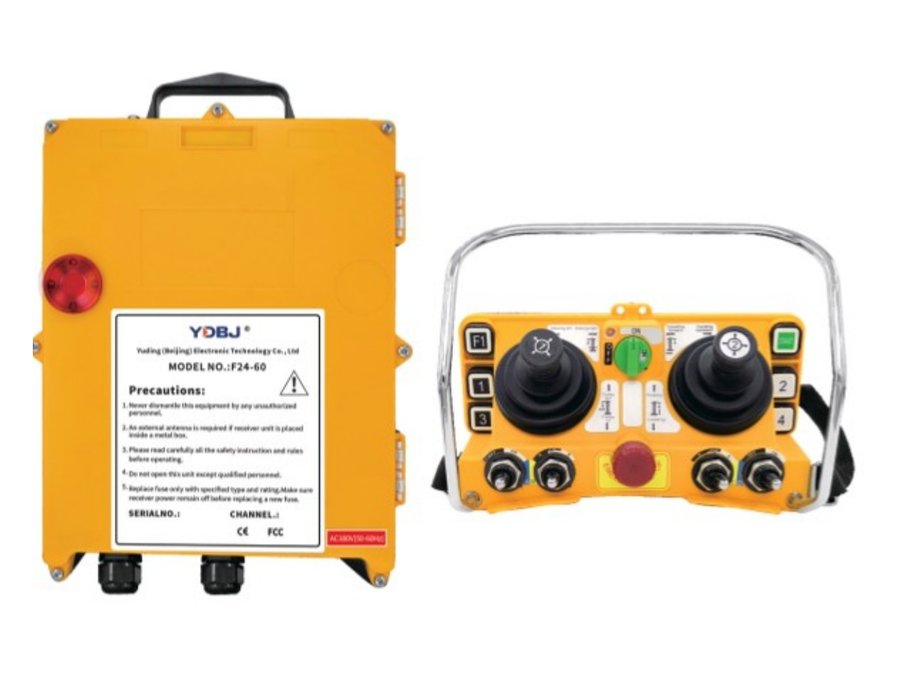
Joystick
Consola con dos joysticks
Modelo F24-60
Dos palancas de 5 velocidades para un manejo preciso de grúas puente, pórticos y grúas torre.
Consola 110 × 215 mm · receptor 345 × 250 mm
Dos joysticks de 5 velocidades
Alcance hasta 100 m
Versión Pro disponible
Alimentación 12 V–220 V AC/DC y 24 V–440 V AC/DC
Cotizar por WhatsApp
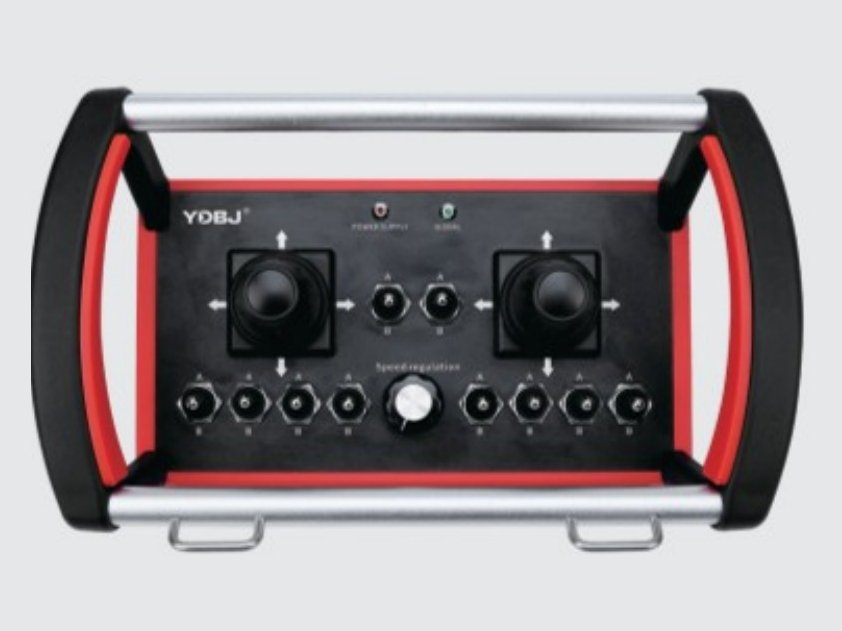
A medida
Consola personalizada para grúas sobre camión
Modelo Consola a medida
Se arma según tu máquina: joysticks, botones, potenciómetros y salidas analógicas o de contacto.
Hasta 2 joysticks en cruz
Pulsadores, selectores y potenciómetro
Salida analógica o de contacto
Parada de emergencia
Alimentación 12 V–220 V AC/DC y 24 V–440 V AC/DC
Cotizar por WhatsApp
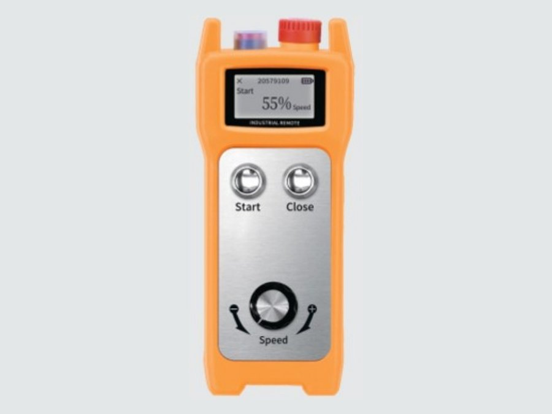
A medida
Control portátil con pantalla
Modelo Control con pantalla
Mando de alta gama con pantalla para ver el estado y la velocidad. Los botones se definen según tu equipo.
Pantalla de estado y ajuste de velocidad
Alcance de 100 a 150 m con antena extendida
Comunicación RS485 / CAN / 232 opcional
De -35 °C a 70 °C
Alimentación 12 V–220 V AC/DC y 24 V–440 V AC/DC
Cotizar por WhatsApp
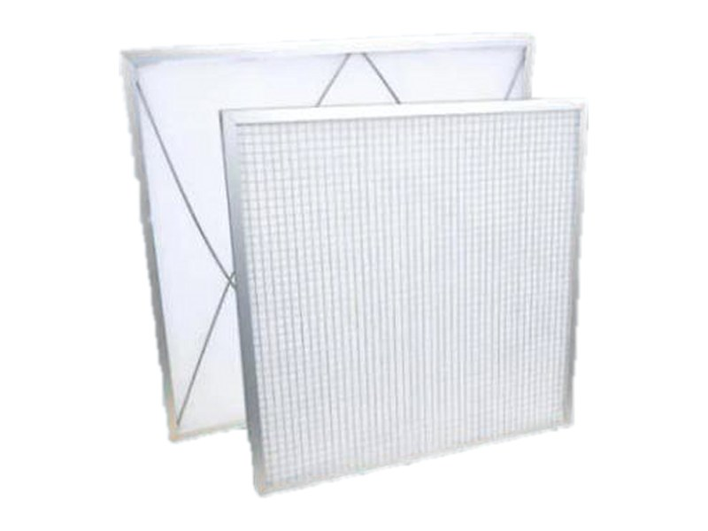
Filtros de aire · Prefiltro
Prefiltro de panel
Clase G4
Panel de marco metálico con malla de protección y medio filtrante sintético.
Ideal para: primera etapa de equipos de aire acondicionado, UTAs y sistemas de ventilación.
Alta capacidad de retención de polvo
Baja caída de presión
Lavable
Estructura robusta
Cotizar por WhatsApp
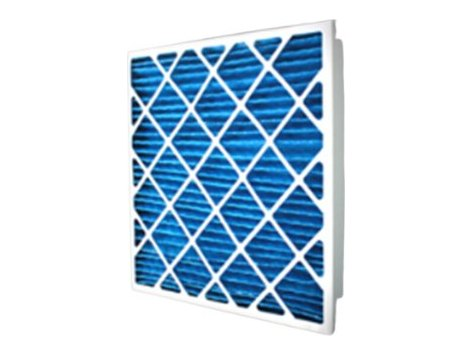
Filtros de aire · Prefiltro
Filtro plisado
Clases G3 · G4 · M5
Medio sintético plisado en marco rígido: mucha más superficie filtrante que un filtro plano.
Ideal para: prefiltración en sistemas de ventilación, aire acondicionado y eliminación de polvo.
Alta capacidad de retención de polvo
Amplia área de filtrado
Gran caudal de aire y baja caída de presión
Protege y alarga la vida de los filtros finos y HEPA
Cotizar por WhatsApp
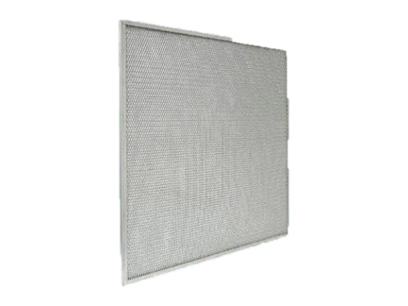
Filtros de aire · Prefiltro
Filtro plisado lavable metálico
Clase G4
Filtro de malla metálica plisada, lavable una y otra vez.
Ideal para: cocinas industriales, hornos, entradas de aire y ambientes con calor o químicos.
Lavable repetidamente: económico y práctico
Resiste temperaturas de hasta 300 °C
Fuerte resistencia a ácidos y álcalis
Baja resistencia al aire y larga vida útil
Cotizar por WhatsApp
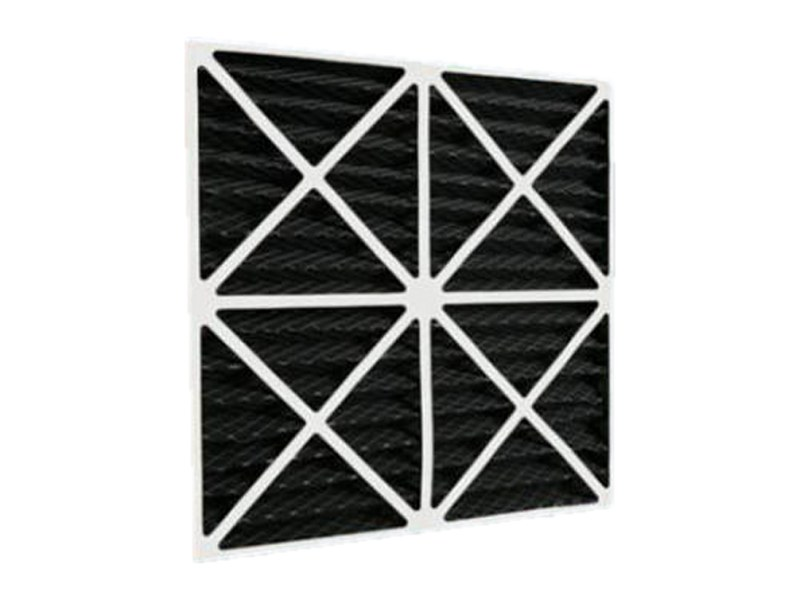
Filtros de aire · Olores y gases
Filtro plisado de carbón activado
Clase G4
Filtro plisado con medio de carbón activado que, además del polvo, retiene olores y gases.
Ideal para: filtrar gases de escape en ventilación y aire acondicionado, y purificar olores o gases tóxicos en interiores.
Retiene olores, humos y gases
También filtra polvo (G4)
Marco rígido con soportes en diagonal
Para ventilación y aire acondicionado
Cotizar por WhatsApp
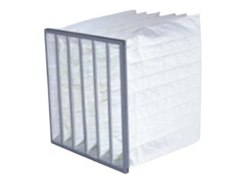
Filtros de aire · Filtración media y fina
Filtro multibolsa
Clases G4 · M5 · F6 · F8 · F9
Filtro de bolsas sintéticas en marco metálico, con gran superficie filtrante en poco espacio.
Ideal para: UTAs de hospitales, centros comerciales, oficinas, industria alimenticia y plantas industriales.
Alta capacidad de retención de polvo y baja resistencia
Bolsa resistente, difícil de romper o desprender
Diseño sin silicona y buena hermeticidad
Cumple EN 779-2012 e ISO 16890-2016
Cotizar por WhatsApp
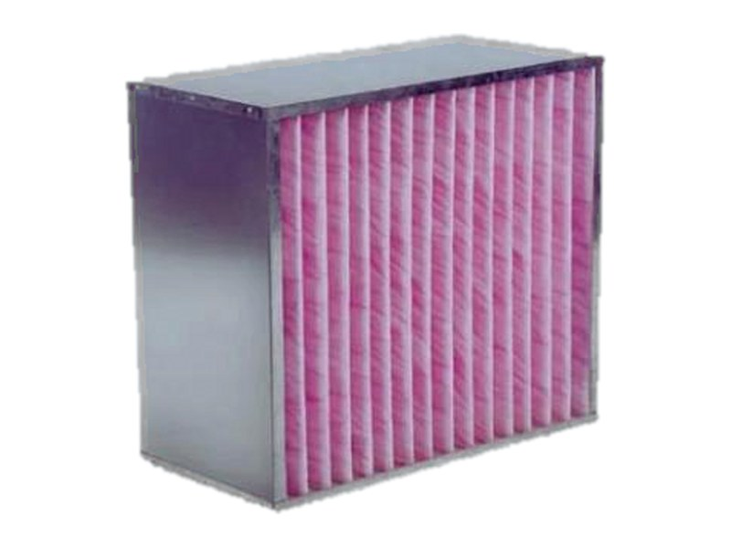
Filtros de aire · Filtración fina
Filtro de bolsa rígida
Clases F8 · F9
Filtro de caja metálica con medio plisado rígido: no se deforma con caudales altos.
Ideal para: UTAs y sistemas con mucho caudal de aire donde se necesita filtración fina.
Gran capacidad de retención de polvo
Alta eficiencia de filtración
Gran volumen de aire y baja resistencia
Estructura rígida
Cotizar por WhatsApp
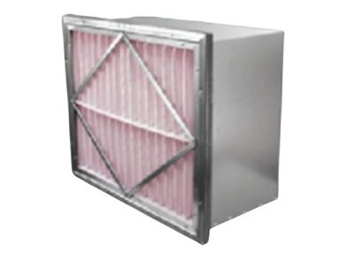
Filtros de aire · Filtración fina
Filtro Flow
Clase F8
Medio sintético de alta calidad plisado en V, con estabilizadores, en marco rígido.
Ideal para: filtro final en HVAC con caudales altos o aire turbulento, o como etapa previa al HEPA.
Pliegues en V con estabilizadores
Estructura rígida que no colapsa
Soporta humedad y flujo turbulento
Mayor vida útil que un filtro de panel
Cotizar por WhatsApp
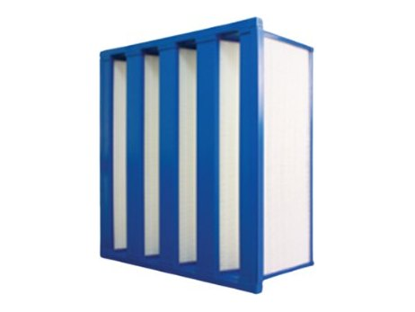
Filtros de aire · Compacto en V (V-Bank)
Filtro compacto C Vell
Clases F7 · F8 · F9
Filtro compacto con paquetes de medio minipliegue en forma de V dentro de un marco plástico rígido.
Ideal para: UTAs de hospitales, laboratorios, data centers, aeropuertos y edificios con certificación de calidad de aire.
Amplia área de filtrado y alta retención de polvo
Alto caudal de aire y baja resistencia
Resiste temperaturas ≤ 80 °C
Resiste humedad ≤ 100 % HR
Cotizar por WhatsApp
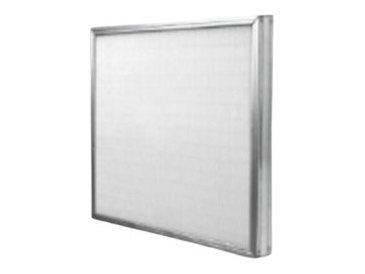
Filtros de aire · Filtración fina / EPA
Filtro CCell
Clases F7 · F8 · F9 · E11
Filtro de alta eficiencia con marco metálico y sello de gel para un cierre hermético.
Ideal para: filtración final en salas limpias, laboratorios, hospitales e industria.
Sello de gel: garantiza la estanqueidad
Alta eficiencia y baja resistencia
Flujo de aire estable
Resiste ≤ 80 °C y ≤ 100 % HR
Cotizar por WhatsApp
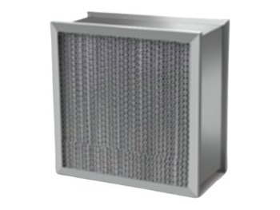
Filtros de aire · Filtro absoluto
Filtro HEPA
Clases H13 · H14 (EN 1822)
Filtro absoluto de pliegue profundo con separadores de aluminio dentro de una caja metálica.
Ideal para: salas limpias, quirófanos, industria farmacéutica y alimenticia, laboratorios y electrónica.
Retiene como mínimo el 99,97 % de las partículas de 0,3 µm
Retiene bacterias, esporas y polvo fino
Profundidad estándar de 292 mm
Marco metálico robusto
Cotizar por WhatsApp
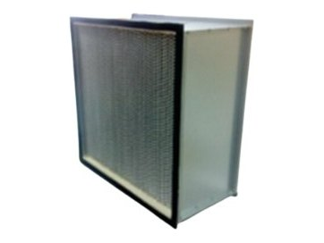
Filtros de aire · HEPA de alta capacidad
Filtro HEPA HC
Clases H13 · H14
HEPA de caja profunda con más superficie de medio filtrante, para mayor caudal y más vida útil.
Ideal para: etapa final de filtración en ventilación, eliminación de polvo y suministro de aire con altos requisitos de limpieza.
Caudal de 3400 m³/h (2000 cfm)
Mayor caudal con la misma medida frontal
Menor pérdida de carga y menos recambios
Marco metálico robusto
Cotizar por WhatsApp
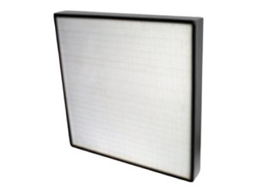
Filtros de aire · HEPA minipliegue · flujo laminar
Filtro HEPA LFA
Clases H13 · H14
Panel HEPA minipliegue de bajo espesor, con pliegues uniformes que dan un flujo de aire estable.
Ideal para: campanas y cabinas de flujo laminar, módulos de techo de salas limpias y cabinas de seguridad biológica.
Espaciado de pliegues uniforme y flujo estable
Alta eficiencia de filtración
Resiste agua y humedad (≤ 100 % HR)
Resiste temperaturas ≤ 80 °C
Cotizar por WhatsApp
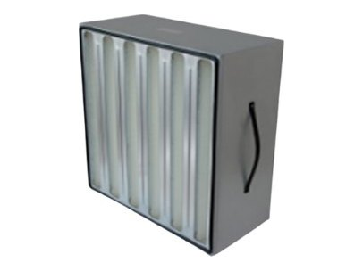
Filtros de aire · HEPA de alta velocidad
Filtro HEPA V-Bank
Clases H13 · H14
HEPA con paquetes en V dentro de una caja metálica: mucho caudal con baja pérdida de carga.
Ideal para: etapa final de filtración en ventilación, eliminación de polvo y suministro de aire con altos requisitos de limpieza.
Alta velocidad de aire
Gran superficie filtrante en V
Baja pérdida de carga
Caja metálica con manija
Cotizar por WhatsApp
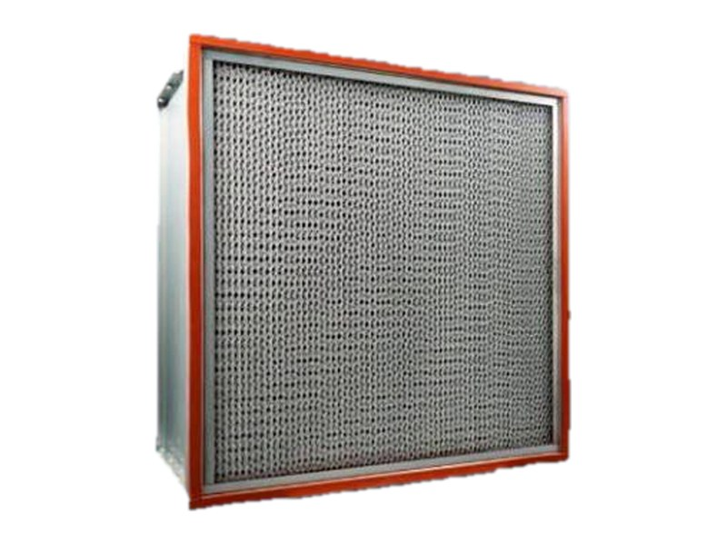
Filtros de aire · HEPA alta temperatura
Filtro HEPA HT 350 °C
Clases H13 · H14
HEPA para aire caliente, con marco y sellado resistentes a la temperatura.
Ideal para: hornos, túneles de despirogenización farmacéuticos, secadores y procesos industriales con calor.
Resiste temperaturas de hasta 350 °C
Alta eficiencia y baja caída de presión
Excelente hermeticidad
Resiste humedad ≤ 100 % HR
Cotizar por WhatsApp
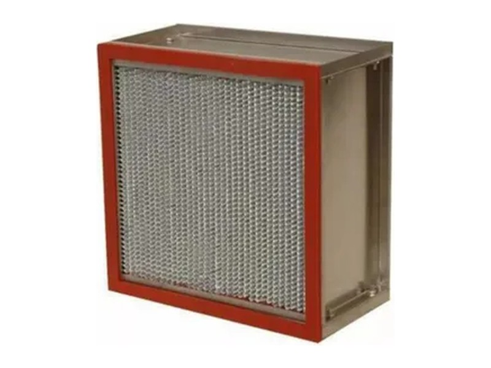
Filtros de aire · HEPA alta temperatura · Nuevo
Filtro HEPA HT 450 °C
Clases H13 · H14
HEPA para temperaturas muy altas, con pegamento y tira de cerámica.
Ideal para: hornos y túneles de despirogenización, esterilización y procesos industriales con temperatura muy alta.
Uso continuo hasta 450 °C
Temperatura máxima soportada: 500 °C
Pegamento y tira cerámica: alto rendimiento
Plegado uniforme y flujo de aire estable
Cotizar por WhatsApp
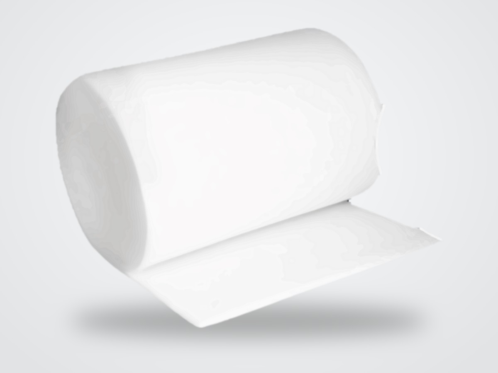
Medios filtrantes · Prefiltro
Manta prefiltro blanca
Clases G2 · G3 · G4 (EN 779)
Manta de fibra de poliéster en rollo para fabricar o reponer prefiltros.
Ideal para: prefiltración en aire acondicionado, UTAs, ventilación y entradas de aire de cabinas de pintura.
Fibra de poliéster (PET)
Lavable y sin silicona
Resiste 100 °C (pico de corte 120 °C)
100 % resistente a la humedad
Cotizar por WhatsApp
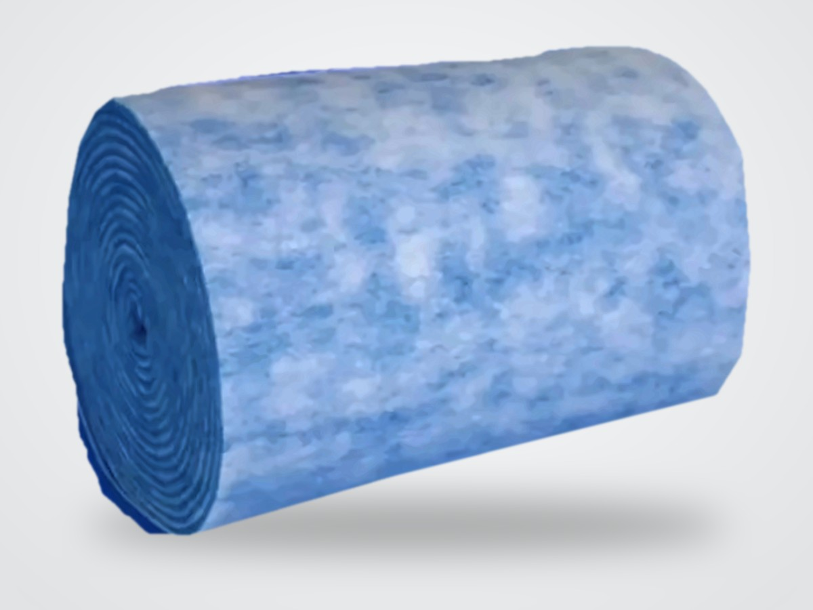
Medios filtrantes · Prefiltro
Manta prefiltro azul y blanca
Clase G4 (EN 779)
Manta en rollo de doble densidad, azul y blanca, para prefiltros de mayor retención.
Ideal para: aire acondicionado, UTAs y cabinas de pintura.
Fibra de poliéster (PET)
Lavable y sin silicona
Resiste 100 °C (pico de corte 120 °C)
100 % resistente a la humedad
Cotizar por WhatsApp
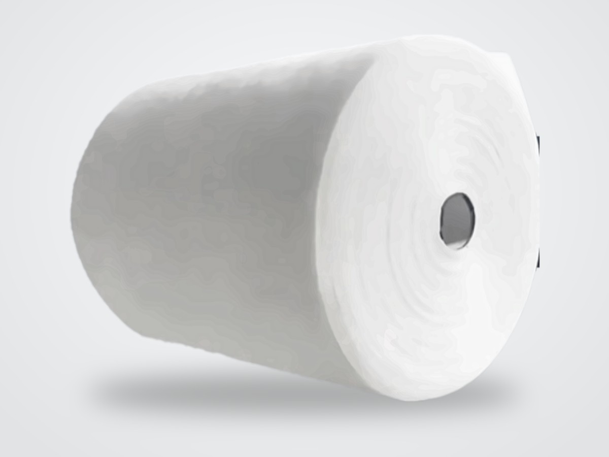
Medios filtrantes · Línea sintética
Manta sintética de filtración media y fina
Clases G4 · M5 · M6 · F7 · F8 (EN 779)
Manta en rollo de microfibra de polipropileno y poliéster para filtración media y fina.
Ideal para: fabricación y recambio de filtros de bolsa, paneles y celdas.
Microfibra de polipropileno (PP) + poliéster (PET)
Resistente al moho
Resiste 100 °C (pico de corte 120 °C)
100 % resistente a la humedad
Cotizar por WhatsApp
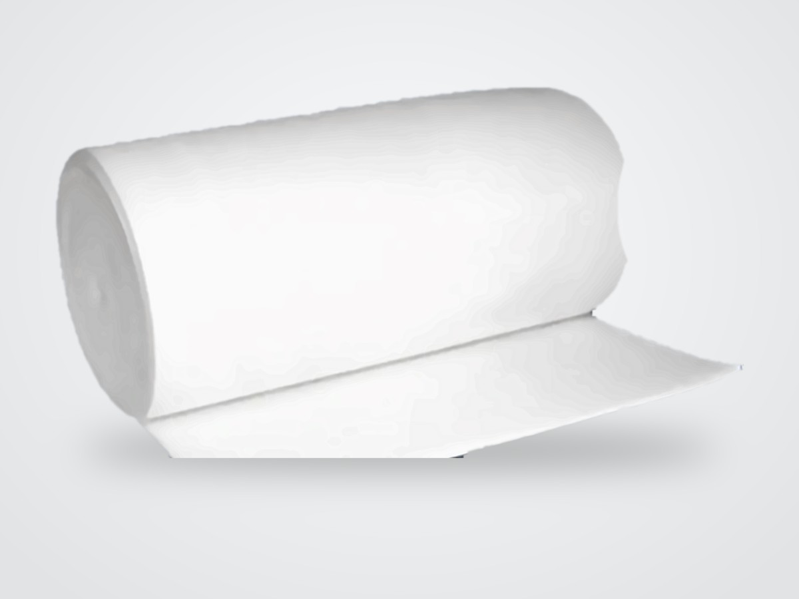
Medios filtrantes · Línea sintética
Manta sintética con adhesivo
Clase M5 (EN 779)
Manta en rollo impregnada con adhesivo que atrapa las partículas.
Ideal para: techos filtrantes de cabinas de pintura y salidas de aire.
Fibra de poliéster (PET) con adhesivo
Captura de partículas por pegamento
Sin silicona: no arruina la pintura
Resiste 100 °C y 100 % la humedad
Cotizar por WhatsApp
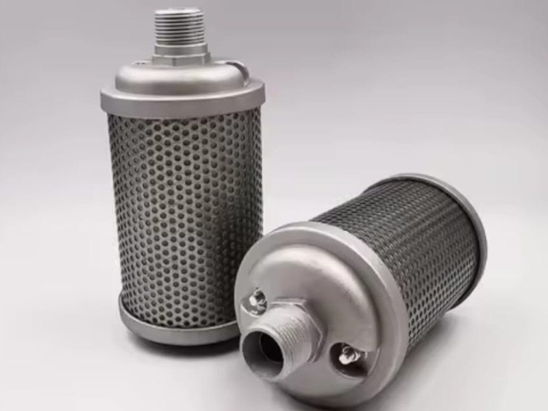
Filtros · Aire comprimido
Silenciador de escape neumático
Silenciador con cuerpo metálico y malla perforada para la salida de aire de válvulas, cilindros y equipos neumáticos.
Ideal para: escapes de válvulas neumáticas, purgas de compresores, secadores de aire y máquinas con aire comprimido.
Menos ruido en la salida de aire comprimido
Cuerpo metálico con malla perforada
Rosca macho de 1/2"
Entrega inmediata
Consultar por WhatsApp
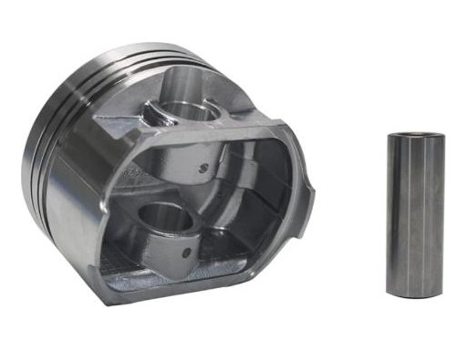
Repuestos · Montacargas
Juego de pistones Nissan K21
Medida 0,50 mm · Repuesto alternativo
Pistones con perno para motores Nissan K21 rectificados, la medida que se usa después de rectificar los cilindros.
Medida 0,50 mm (sobremedida)
Juego para los 4 cilindros, con pernos
Para montacargas con motor Nissan K21 (Nissan, TCM, Caterpillar, Komatsu y otros)
Repuesto alternativo
Consultar por WhatsApp
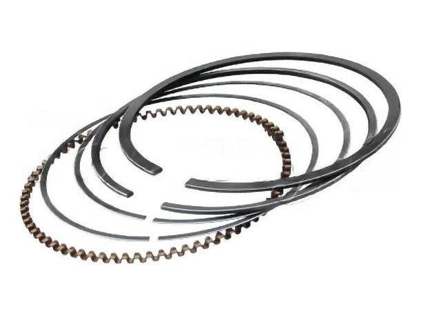
Repuestos · Montacargas
Juego de aros Nissan K21
Medida 0,50 mm · Repuesto alternativo
Juego de aros de compresión y de aceite para pistones de motor Nissan K21 en medida 0,50.
Medida 0,50 mm
Aros de compresión y de control de aceite
Para los 4 cilindros
Repuesto alternativo
Consultar por WhatsApp
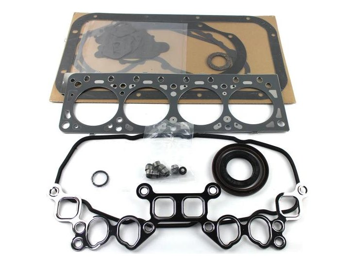
Repuestos · Montacargas
Juego de juntas motor Nissan K21
Medida 0,50 mm · Repuesto alternativo
Juego completo de juntas para reparar o rectificar el motor Nissan K21 de tu montacargas.
Para motor K21 en medida 0,50
Junta de tapa de cilindros, múltiples y tapa de válvulas
Junta de cárter, retenes y sellos de válvula
Repuesto alternativo
Consultar por WhatsApp
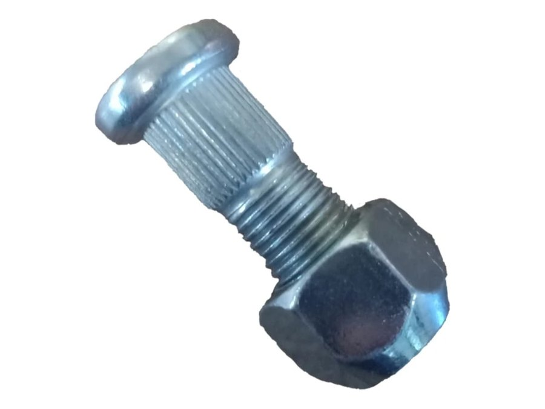
Repuestos · Montacargas
Perno y tuerca de rueda trasera
M14 × 1,50 · Repuesto alternativo
Perno de rueda con tuerca para la rueda trasera de montacargas.
Rosca M14 × 1,50
Largo 51 mm
Tuerca incluida
Cuello estriado de ajuste firme
Consultar por WhatsApp
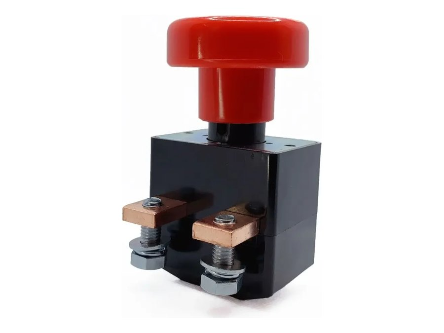
Repuestos · Montacargas
Interruptor de parada de emergencia
250 A · Repuesto alternativo
Interruptor tipo hongo que corta la batería al instante con un solo golpe.
Soporta hasta 250 amperios
Bornes de cobre con tornillería
Para montacargas, paleteras y apiladoras eléctricas
Repuesto alternativo
Consultar por WhatsApp
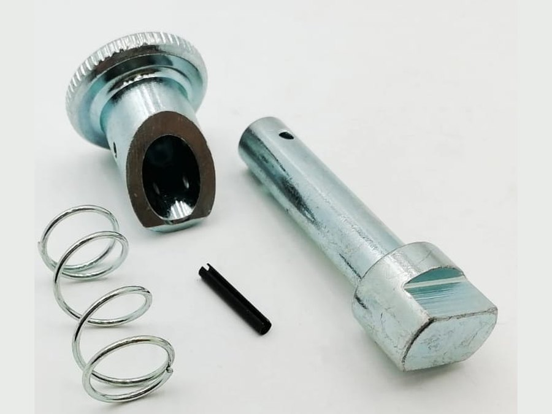
Repuestos · Montacargas
Kit pasador de tope de horquilla
Kit completo · Repuesto alternativo
Mantiene las horquillas del montacargas bien trabadas en su lugar.
Perilla moleteada y pasador
Resorte y pasador elástico incluidos
Kit completo, listo para instalar
Repuesto alternativo
Consultar por WhatsApp
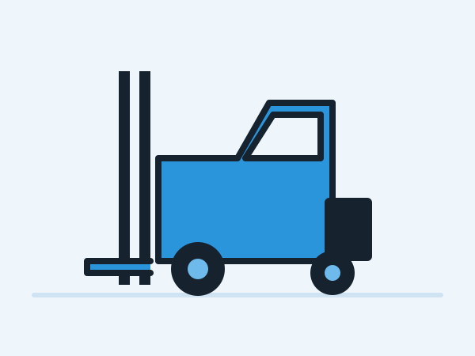
Repuestos · Montacargas
Repuestos para montacargas
Repuestos para autoelevadores eléctricos, a gas y diésel.
Filtros, frenos y embragues
Ruedas y neumáticos macizos
Horquillas, cadenas y rodillos de mástil
Bombas y cilindros hidráulicos
Consultar repuesto
Repuestos · Mini excavadoras
Repuestos para mini excavadoras
Repuestos para mantener tu mini excavadora trabajando.
Orugas de goma y tren de rodaje
Dientes y cuchillas de balde
Bulones, bujes y pasadores
Kits de sellos y mangueras hidráulicas
Consultar repuesto
Repuestos · Equipos viales
Repuestos para equipos viales
Repuestos para retroexcavadoras, minicargadoras, rodillos compactadores, motoniveladoras y otras máquinas viales.
Cuchillas y cantoneras
Componentes de tren de rodaje
Filtros de motor, aceite y combustible
Piezas eléctricas y de cabina
Consultar repuesto
Repuestos · Hidráulica y motor
Hidráulica y motor
Componentes que comparten muchas máquinas pesadas.
Bombas, motores y válvulas hidráulicas
Cilindros y kits de reparación
Juntas, retenes y o-rings
Correas, radiadores y arranques
Consultar repuesto
¿Qué filtro necesito? En la mayoría de las instalaciones el aire pasa por etapas:
Prefiltro (panel, plisado, plisado lavable, carbón activado o manta G2–G4): retiene el polvo grueso y protege a los demás filtros.Filtración media o fina (multibolsa, bolsa rígida, Flow, compacto C Vell, CCell): retiene partículas finas, polen y hollín.Filtro absoluto (HEPA, HEPA HC, HEPA LFA, HEPA V-Bank): donde se necesita aire ultra limpio, como salas limpias, quirófanos o procesos farmacéuticos. Para aire caliente: HEPA HT 350 °C y 450 °C .
Mandanos por WhatsApp las
medidas (ancho × alto × profundidad) y el
uso , y te recomendamos la combinación correcta.
¿Cómo pedir tu repuesto? Escribinos por WhatsApp con la marca, el modelo y el número de serie de tu equipo, y si podés una foto de la pieza o su código. Te respondemos con precio y disponibilidad.